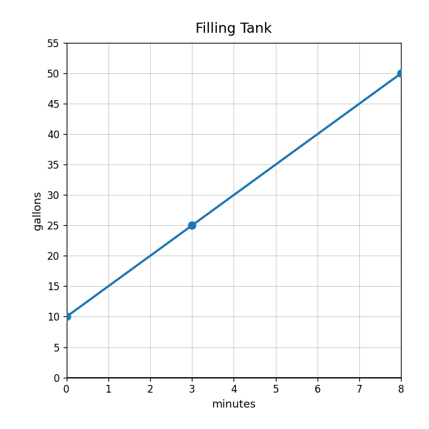

Extra Practice 2.5.4
Use the scatterplot. Describe the association as positive, negative, or no clear association.

Use the CYU Data Set A model to estimate the distance at 4 minutes. Interpret the prediction.
For the model $A=-3.5w+52$, explain what the slope and starting value mean in a decreasing real-world data situation.
A line of fit misses most of the data points in the same direction. Explain how you would revise the model and how you would check whether it improved.
Which model has the larger slope: $M=4x+60$ or $N=9x+12$?
Which model has the larger starting value: $y=13x+3$ or $y=2x+35$?
| day | 0 | 1 | 2 | 3 |
|---|---|---|---|---|
| A | 11 | 19 | 27 | 35 |
Find the starting value and rate of change.
Use the two-plan graph. Which plan is larger at month 0?

Compare $A=18+6x$ and $B=42+2x$. Which starts higher? Which grows faster?
A table starts at 5 and increases by 8 each step. A context starts with 20 and adds 4 each step. Compare the relationships.
Explain how two linear relationships can start in one order but later switch which one is greater.
Create two equations for competing plans and write a recommendation question that could be answered by comparing them.
Does $x=9$ make $2x+7=25$ true?
Use the tank graph to write an equation for gallons over time.

Compare solving $5x+10=45$ by using a table and by using inverse operations. Which is more efficient?
A model predicts 26.5 students will attend an event. Explain how to interpret or revise the answer in context.